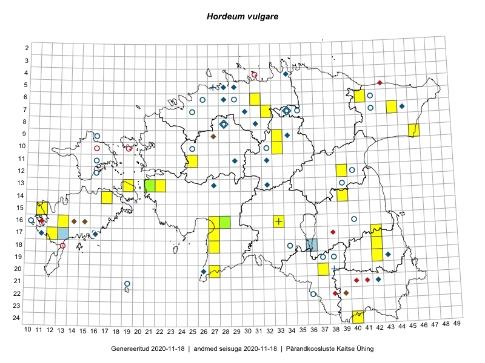

Hordeum vulgare
Uuendatud: 2016-12-02
Kaardile koondatud taksonid: Hordeum vulgare L.

Kaart põhineb 27 vaatlusel. Taksonit on leitud 20 ruudust.
Kuvatud viited 20 esimesele andmebaasikirjele, ülejäänud PlutoFis
- Toomas Kukk, Tiit Hallikma: 2015-07-24: 06-41: ala
- Peedu Saar, Eerik Leibak: 2015-08-16: 12-39: GPS punkt
- Peedu Saar, Eerik Leibak: 2015-08-16: 12-39: ala
- Tiit Hallikma, Toomas Kukk: 2015-07-24: 06-41: GPS punkt
- Tiit Hallikma, Toomas Kukk: 2015-07-20: 07-44: ala
- Tiit Hallikma, Toomas Kukk: 2015-07-20: 07-44: GPS punkt
- Meeli Mesipuu, Kadri Tali: 2015-07-08: 14-17: ala
- Eeva-Maria Jeletsky, Tarmo Niitla: 2015-08-10: 20-37: GPS punkt
- Eeva-Maria Jeletsky, Tarmo Niitla: 2015-08-10: 20-37: ala
- Mari Reitalu, Oliver Parrest: 2015-07-27: 16-13: ala
- Mari Reitalu, Triin Reitalu: 2015-07-22: 17-12: ala
- Kirsi Loide, Marje Loide: 2015-08-10: 13-22: ala
- Mari Reitalu, Oliver Parrest: 2015-07-16: 15-11: ala
- Maria Abakumova: 2015-06-09: 16-33: GPS punkt
- Kirsi Loide, Marje Loide: 2015-07-27: 17-42: ala
- Kirsi Loide, Marje Loide: 2015-07-28: 18-42: ala
- Kirsi Loide, Marje Loide: 2015-07-29: 19-42: ala
- Aat Sarv, Eerik Leibak: 2016-07-19: 20-27: GPS punkt
- Aat Sarv, Eerik Leibak: 2016-07-19: 20-27: ala
- Mari Metsoja, Eerik Leibak: 2016-07-21: 10-33: ala